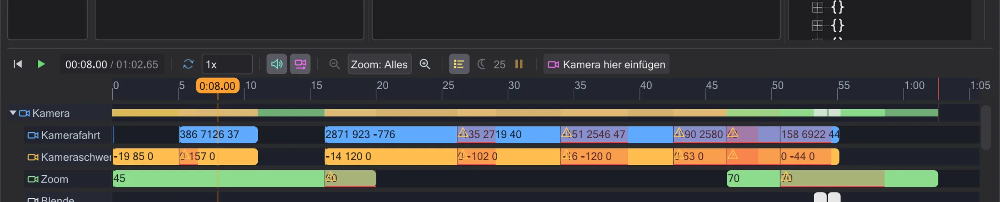

Zeitleiste
Die Zeitleiste spielt die Szene ab und zeigt, wann jeder Befehl geschieht. Einen Block ziehen ändert das Skript mit.

Abspielen#
Der Abspielknopf (▶) unter der Karte startet und hält an. Auf das Lineal klicken oder ziehen stellt die Zeit. Das Tempofeld verlangsamt die Szene (Ton nur bei 1x), Schleife wiederholt sie. Das Mausrad über dem Lineal zoomt, Strg+Rad über den Spuren ebenso; Alles zeigt alles, die mittlere Maustaste verschiebt. Bilder oder Sekunden - der Einheitenknopf schaltet um.
Zeilen und Arten#
Die Zeile Kamera enthält die Kamerabefehle (Fahrt, Schwenk, Zoom, Blende). Darunter hat jede Figur und jeder Mover, den das Skript anfasst, eine eigene Zeile. Ein Klick auf den Pfeil am Namen klappt sie auf: die Befehle sind sortiert nach Bewegung, Animation, Blick, Ton, Zustand und Ablauf (waits, Signale). Zeilen, in denen nach dem Start nichts geschieht, sind ausgeblendet; Ruhige Spuren zeigt sie.
Die wait-Befehle sind zunächst ausgeblendet - sie setzen trotzdem alles in die Zeit, und das Verschieben eines Blocks passt sie an. waits zeigt sie als eigene Blöcke.
Zeit durch Ziehen ändern#
Einen Block nach links oder rechts ziehen ändert das wait davor - der Befehl kommt früher oder später, alles danach rückt mit. Einen Kamerablock an seinem Ende ziehen ändert seine Dauer. Laufen und Fliegen erscheinen als Bänder am unteren Rand der Zeile einer Figur; sie lassen sich genauso in der Zeit ziehen, ein Rechtsklick auf einen Lauf schaltet zwischen Gehen und Rennen.
Ein Klick auf einen Block wählt seine Zeile im Skript, und die Karte springt zu diesem Augenblick - Zeitleiste, Skript und Karte zeigen immer dasselbe.
wait endet ein Spielbild (50 ms) später als geschrieben, und ein dowait wartet auf die genannte Aufgabe. Lässt sich eine Zeit nicht wissen (ein waitsignal), sagt die Zeitleiste das, statt zu raten.